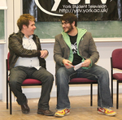
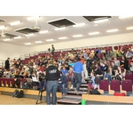
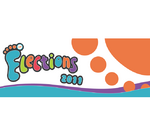
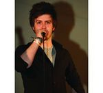

YUSU Elections 2011
Candidate Profiles View All »
ᐊBen McGladdery
York Sport President
Sam Asfahani
York Sport President
Robert Hughes
Welfare
Laura Borisovaite
Welfare
Graeme Osborn
Academic Affairs
Alastair Logan
Academic Affairs
Charlie Rowley
President
Aaron Rolph
President
Tim Ellis
President
Lydia Blundell
President
James Anderson
Student Activities
James Croydon
Student Activities
Arthur Pitt
Student Activities
Ben McGladdery
York Sport President
Sam Asfahani
York Sport President
Robert Hughes
Welfare
Laura Borisovaite
Welfare
Graeme Osborn
Academic Affairs
Alastair Logan
Academic Affairs
Charlie Rowley
President
Aaron Rolph
President
Tim Ellis
President
Lydia Blundell
President
James Anderson
Student Activities
James Croydon
Student Activities
Arthur Pitt
Student Activities
News
Tim Ellis scrapes Presidential win by 14 vote margin
In what some have termed a surprising result, Tim Ellis has been elected as YUSU President for the year 2011/12
YUSU Election results night: As it happened
Join Nouse at the YUSU elections results party – who will be the winners?
York Sport candidates top recognition poll
A recent Nouse election poll has shown that the race for York Sport Presidency have been the most visible so far, with both Asfahani and McGladdery ranking in the top four most recognised candidates
YUSU presidential debate: As it happened
Follow the excitement of the Presidential debate, as Nouse brings you the action as it happens
YUSU Election Hustings: As it happened
Nouse brings you the latest action at YUSU’s Election Hustings 2011
YUSU election candidates revealed
The full list of candidates standing in this year’s YUSU elections has been released
YUSU Officers propose major overhaul of democratic structure
Camilla Apcar looks at the proposed future of YUSU’s Democratic Structure, which will be put to a cross-campus vote after tomorrow’s Union General Meeting
Election Timeline
Nominations open: Tuesday 25th January, 12:00
Nominations close: Thursday 10th February, 12:00
Campaigning briefing: Friday 11th February
Hustings: Thursday 17th February
Campaigning opens: Friday 18th February
Voting opens: Friday 25th February, 12:00
Voting closes: Thursday 3rd March, 12:00
Results announced: Thursday 3rd March, 20:00
Latest post: Two horse race for York Sport
With nominations having been open over a week, TR has noted that election fever has yet to gather any real sense of momentum
Aaron Porter’s failings should teach us a lesson